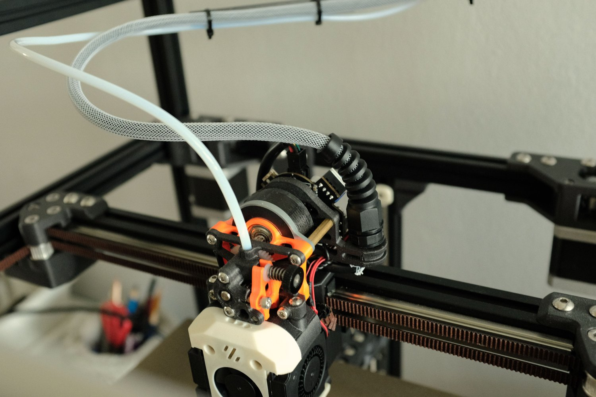
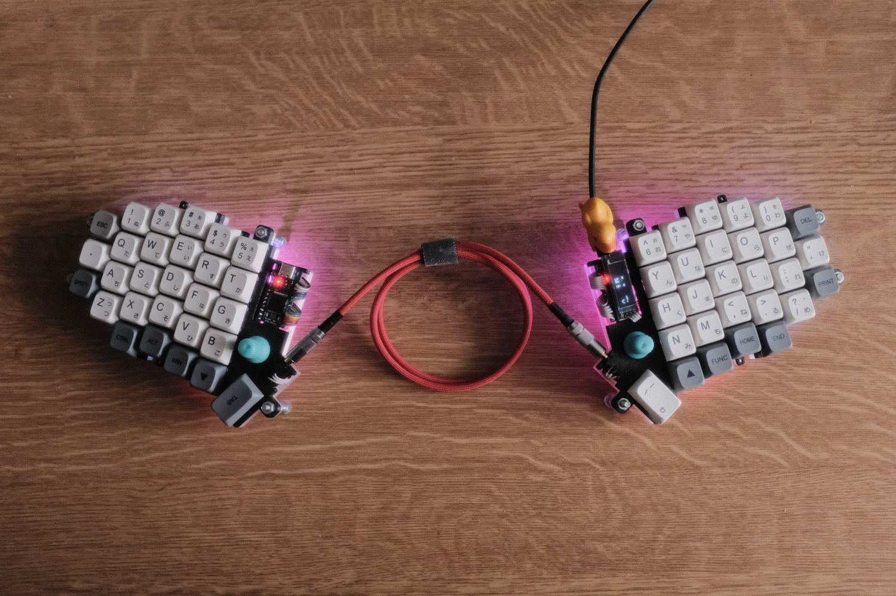
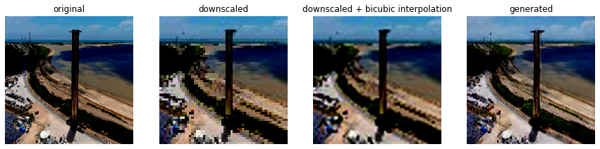

Building a spaceship 3D printer from scratch - the Voron Trident
I decided to challenge my skills and build something really complex and great. A machine that is essentially a small factory that can produce physical objects in a very short amount of time. After doing a lot of research on the internet, I stumbled upon the Voron 3D printer. It struck me as a remarkably well thought-out project, with a large and active community.

Designing and building a handwired split mechanical keyboard
As a computer science student a keyboard is my everyday tool. For a long time, I used a cheap chinese brand 65% mechanical keyboard.
I enjoyed the feeling when typing on it (it had knock-off Cherry MX brown switches), as opposed to my previous very old membrane keyboard.
Soon I discovered, there is a big community focused on building custom keyboards, but the prices of some branded parts seemed really crazy to me.

Video upscaling (super-resolution) using neural networks
In this blog post, I will present my implementation of a neural network that can upscale video resolution based on Generative Adversarial Network (GAN) architecture.
The first step was a realization that this problem could be reduced to upscaling single frame-by-frame images from the video and then connecting them at the end.
The process of upscaling images is generally called Single Image Super-Resolution (SISR), which is nowadays a wide topic that a lot of researchers are interested in
and has a broad range of applications. There are some traditional techniques (Bicubic interpolation),
that solve this problem, but the results are often blurry and can be enhanced by the use of machine learning techniques.
